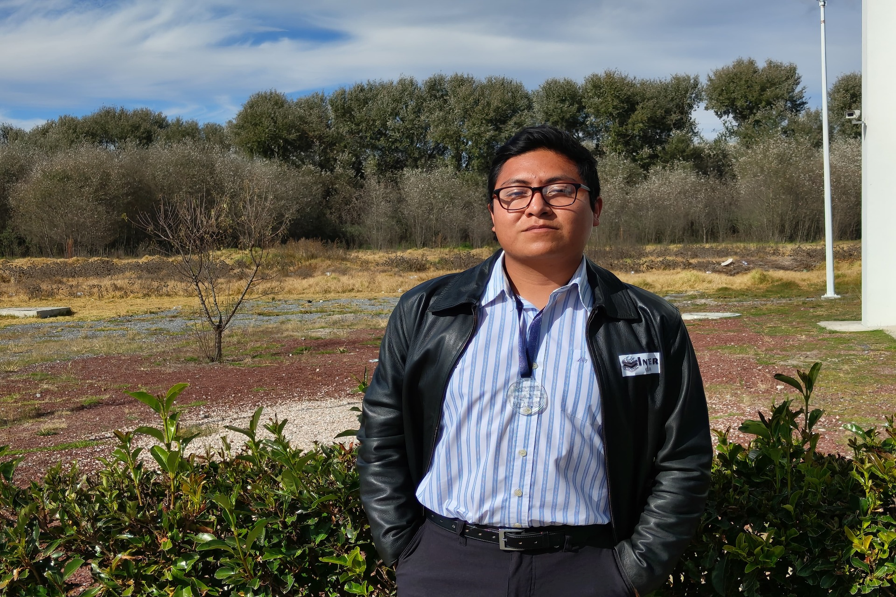
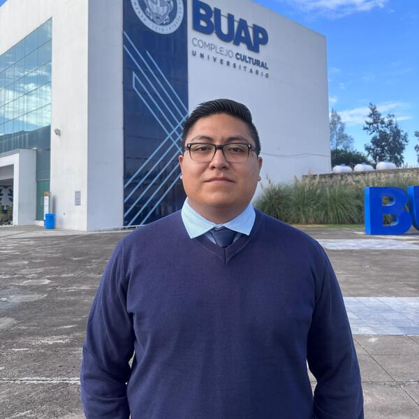

Daniel Alonso
Soy
Acerca de mí
Soy Ingeniero en Sistemas de Tecnologías de la Información Industrial especializado en el desarrollo de aplicaciones empresariales y el análisis de datos. Cuento con experiencia en la digitalización de procesos industriales; durante mi etapa en la Dirección de Pintura de Audi México, diseñé e implementé herramientas digitales clave para la automatización financiera y el control de hallazgos de seguridad. Mi portafolio técnico abarca desde la implementación de sistemas web con arquitecturas robustas hasta el despliegue de proyectos de machine learning enfocados en la seguridad pública. Me apasiona la transformación digital y busco aportar soluciones eficientes, escalables y orientadas a resultados en equipos de alto rendimiento.

Ingeniero en Sistemas y Tecnologías de la Información Industrial
Transformo datos y requerimientos complejos en soluciones tecnológicas eficientes, combinando la rigurosidad de la ingeniería con un diseño de interfaces (UI/UX) intuitivo.
- Nacimiento: 20 de Mayo del 2002
- Github: github.com/juan-daniel-carrasco-alonso
- Teléfono: +52 247 110 0048
- Ciudad: Huamantla, Tlaxcala, México
- Edad: 24
- Grado: Ingenierio
- Email: juandanielcarrascoalonso@gmail.com
- Freelance: Disponible
El desarrollo va más allá de programar; es resolver problemas con interfaces intuitivas. Aplico diseño UI/UX para asegurar una adopción ágil. Desde flujos automatizados hasta machine learning, entrego soluciones eficientes que optimizan tiempos y facilitan el trabajo diario.
Proyectos Implementados ● Sistemas y aplicaciones funcionales
Herramientas de Desarrollo ● Lenguajes y plataformas clave
Meses de Experiencia Industrial ● Práctica en el sector automotriz
Flujos Automatizados ● Optimización de procesos operativos
Skills
Dominio de ecosistemas tecnológicos orientados a la automatización de procesos, análisis de datos y desarrollo de plataformas web robustas.
Trayectoria
Un recorrido por mi evolución profesional y académica. Descubre los proyectos y roles que han forjado mi experiencia en la digitalización de procesos corporativos, el desarrollo de sistemas web y la creación de arquitecturas robustas.
Perfil Profesional
JUAN DANIEL CARRASCO ALONSO
Ingeniero en Sistemas de Tecnologías de la Información Industrial especializado en el desarrollo de aplicaciones empresariales y análisis de datos. Orientado a crear soluciones digitales eficientes, escalables y con alto impacto operativo.
- Huamantla, Tlaxcala, México
- (+52) 247-110-0048
- juandanielcarrascoalonso@gmail.com
Experiencia Profesional
Practicante en Digitalización de Procesos y Desarrollo de Aplicaciones
Feb 2026 - Ago 2026
Audi México - Dirección de Pintura
- Digitalización y Escalabilidad de Seguridad Industrial: Transformé el método tradicional de reportes en papel mediante una aplicación que permite la trazabilidad de hallazgos en tiempo real. Gracias a su éxito en Pintura, el sistema fue adoptado por las naves de Carrocerías y Montaje, consolidando la información de toda la planta en un dashboard directivo en Power BI.
- Sistema de Autorizaciones de Compra: Desarrollé una solución integral para el control de facturación en las áreas de pintura. Autonomicé los flujos de aprobación y diseñé informes de consulta en Power BI, eliminando cuellos de botella y asegurando la transparencia del presupuesto
- Control de Inventario y Mitigación de Scrap: Creé una aplicación para gestionar el scrap en la nave de pintura, estandarizando el registro de procedencia del material para evitar pérdidas desconocidas y optimizar el control de inventario.
- Trazabilidad de Calidad en Retrabajos: Diseñé una herramienta para registrar y monitorear las intervenciones en las áreas de retrabajo de la nave de montaje, mejorando el seguimiento operativo y el control de calidad.
Educación
INGENIERÍA EN SISTEMAS DE TECNOLOGÍAS DE LA INFORMACIÓN INDUSTRIAL
Agosto 2022 - Mayo 2026
Benemérita Universidad Autónoma de Puebla
Formación especializada en la digitalización de la industria, abarcando desde el diseño de arquitecturas web y bases de datos hasta la implementación de minería de datos y modelos de machine learning para la resolución de problemas reales.
TÉCNICO EN PROGRAMACIÓN
Agosto 2017 - Mayo 2020
Centro de Bachillerato Tecnológico Industrial y de Servicios No. 61
Desarrollo de bases técnicas sólidas en lógica algorítmica, lenguajes de código y estructuración de software, cimentando el inicio de mi trayectoria orientada al desarrollo tecnológico y la innovación.
Proyectos Destacados
Proyectos Universitarios con Clientes Reales
Ago 2022 - May 2026
Benemérita Universidad Autónoma de Puebla
- Desarrollo full-stack (CodeIgniter 4, PHP, JS, MySQL, MongoDB) de una plataforma de gestión de servicios para el LIEE-INAOE.
- Identificación de patrones de seguridad pública aplicando Machine Learning y minería de datos (RapidMiner, Weka, Power BI) a conjuntos de datos del INEGI.
- Diseño de una infraestructura de red optimizada para una empresa de logística y venta de tractocamiones.
- Creación de una aplicación interactiva (ECOPLAY) con integración de realidad virtual y aumentada en Unity.
Portafolio
Una muestra de mi trabajo práctico en el desarrollo de software y análisis de datos. Descubre cómo transformo requerimientos complejos y lógica de programación en herramientas digitales eficientes, escalables e intuitivas.
- Todos
- Desarrollo Web
- Digitalización
- Datos
- Software
- Apps


Servicios
Ofrezco un conjunto integral de soluciones tecnológicas diseñadas para optimizar la operación y resolver problemas complejos. Mi enfoque combina el desarrollo de software con el análisis de datos para entregar herramientas eficientes que generen un impacto real en la industria.
Digitalización de Procesos
Creación de flujos de trabajo y aplicaciones corporativas con Microsoft Power Platform para reducir tiempos operativos, digitalizar formatos y centralizar la gestión operativa.
Desarrollo Web Full-Stack
Diseño y programación de plataformas web robustas a la medida, implementando tecnologías frontend y backend para la gestión eficiente de servicios y usuarios.
Análisis y Ciencia de Datos
Análisis avanzado de grandes conjuntos de datos mediante algoritmos y modelos predictivos para identificar patrones y optimizar la toma de decisiones.
Arquitectura de Bases de Datos
Estructuración, normalización y gestión de bases de datos relacionales y no relacionales, asegurando la integridad, seguridad y disponibilidad de la información.
UI/UX y Análisis de Negocio
Levantamiento de requerimientos directamente con usuarios finales para traducir necesidades operativas en interfaces responsivas, intuitivas y fáciles de adoptar.
Desarrollo y Consultoría Freelance
Disponibilidad para colaborar en proyectos independientes, ofreciendo soluciones tecnológicas a la medida, desde automatización de procesos hasta plataformas web, para resolver las necesidades específicas de tu negocio.
Constancias y Certificaciones
Validación de mis competencias técnicas, metodologías y dominio de herramientas a través de instituciones y plataformas reconocidas.
- Todos
- Certificaciones
- Constancias
- Reconocimientos
Reconocimiento Generación Primavera 2026
Audi México | Expedido: Agosto 2026
Reconocimiento por el compromiso, aprendizaje y dedicación aportados al equipo de trabajo durante el programa de practicas profesionales en la planta de San José Chiapa.
Ver reconocimientoReconocimiento al Mérito Académico
BUAP | Expedido: Junio 2026
Reconocimiento otorgado por la Benemérita Universidad Autónoma de Puebla tras obtener el Mérito Académico con un promedio sobresaliente de 9.10 en la Ingeniería en Sistemas y Tecnologías de la Información Industrial.
Ver reconocimientoReconocimiento Generación 2022 - 2026
BUAP | Expedido: Junio 2026
Reconocimiento otorgado por la Benemérita Universidad Autónoma de Puebla por haber concluido satisfactoriamente los estudios y formar parte de la generación de egresados de la Ingeniería en Sistemas y Tecnologías de la Información Industrial.
Ver reconocimientoConstancia como Expositor en Talleres de Tecnologías
BUAP | Expedido: Diciembre 2025
Constancia otorgada por la Benemérita Universidad Autónoma de Puebla por la participación como expositor en la jornada "Talleres de tecnologías para media superior", avalando una duración de 7 horas.
Ver constanciaConstancia del Séptimo Encuentro Generacional ISTII
BUAP | Expedido: Octubre 2025
Constancia otorgada por la Benemérita Universidad Autónoma de Puebla por la asistencia al evento enfocado en el "Trabajo colaborativo en proyectos para la industria", acreditando una duración total de 7 horas.
Ver constanciaCertificado en Fundamentos de ChatGPT
Santander Open Academy | Expedido: Agosto 2025
Certificado de finalización otorgado por Santander Open Academy por haber concluido satisfactoriamente el curso "Fundamentos de ChatGPT", avalando 8 horas de formación estructuradas en 2 módulos con autoevaluación.
Ver certificaciónCertificado en Work Smarter with Microsoft Excel
Microsoft & Coursera | Expedido: Agosto 2025
Certificado de curso autorizado por Microsoft y ofrecido a través de la plataforma Coursera, acreditando la finalización exitosa del programa en línea enfocado en el uso eficiente de Microsoft Excel.
Ver credencialConstancia por Ponencia "ECOPLAY"
BUAP (Facultad de Ciencias de la Computación) | Expedido: Julio 2025
Constancia otorgada por la Benemérita Universidad Autónoma de Puebla por la presentación de la ponencia colaborativa "ECOPLAY: Aprendizaje Inmersivo con RV, RA y Alexa sobre Responsabilidad Socioambiental" en el marco del 11° Workshop de Proyectos de Investigación Junior 2025.
Ver constanciaConstancia de Asistencia a "Proyectos Itinerantes ISTII 2025"
BUAP | Expedido: Junio 2025
Constancia otorgada por la Benemérita Universidad Autónoma de Puebla por la participación como asistente a la jornada "Proyectos Itinerantes ISTII 2025", acreditando una duración total de 9 horas.
Ver constanciaConstancia como Ponente "Conociendo la experiencia de estudiar ISTII"
BUAP | Expedido: Junio 2025
Constancia otorgada por la Benemérita Universidad Autónoma de Puebla por la participación como ponente de la conferencia "Conociendo la experiencia de estudiar ISTII", dentro de la jornada "Compartiendo experiencias de ISTII en el ámbito medio superior", acreditando una duración total de 9 horas.
Ver constanciaConstancia de Segundo Lugar en el "5to Simposio: Transformando la Educación con Proyectos de Aplicación Industrial"
BUAP | Expedido: Junio 2025
Constancia otorgada por la Benemérita Universidad Autónoma de Puebla por haber ganado el Segundo Lugar en el marco del "5to Simposio: Transformando la Educación con Proyectos de Aplicación Industrial", acreditando una duración total de 8 horas.
Ver constanciaConstancia como Ponente "Arma tu cable de red"
BUAP | Expedido: Junio 2025
Constancia otorgada por la Benemérita Universidad Autónoma de Puebla por la participación como ponente de la conferencia "Arma tu cable de red", en el marco del Ciclo de Conferencias: "Puertas abiertas de San José Chiapa", acreditando una duración total de 7 horas.
Ver constanciaCertificado de Técnico en redes de datos
Fundación Carlos Slim (Capacítate para el empleo) | Expedido: Noviembre 2024
Certificado otorgado por la Fundación Carlos Slim a través de la plataforma "Capacítate para el empleo", que acredita la aprobación exitosa del curso "Técnico en redes de datos". Este documento avala una capacitación técnica equivalente a 61 horas de estudio, finalizada con un puntaje destacado de 9.27.
Ver credencialConstancia de Participación en el "Segundo Encuentro Nacional de Ciencia de Datos"
Múltiples Instituciones (BUAP, UPAEP, UDLAP, entre otras) | Expedido: Noviembre 2024
Constancia que acredita la participación en el "Segundo Encuentro Nacional de Ciencia de Datos: Retos, Soluciones y Oportunidades", llevado a cabo los días 7 y 8 de noviembre de 2024 en Puebla. Este evento contó con el respaldo y organización conjunta de importantes instituciones académicas y empresariales, tales como la BUAP, UPAEP, UDLAP, CANACINTRA y COPARMEX.
Ver constanciaConstancia de 2do. Lugar en la Feria de Proyectos FEPRO 2024
BUAP | Expedido: Septiembre 2024
Constancia otorgada por la BUAP por obtener el segundo lugar en la categoría "Software básicas" durante la XVI Feria de Proyectos FEPRO 2024. El galardón reconoce el desarrollo del "Sistema de automatización del proceso clave del laboratorio del LIEE".
Ver constanciaReconocimiento de 2do. Lugar: Aplicaciones Básicas FEPRO 2024
BUAP | Expedido: Septiembre 2024
Reconocimiento de segundo lugar en la categoría "Aplicaciones Básicas" del evento "Codificando el Futuro 2024", otorgado por el desarrollo del proyecto "Sistema de automatización del proceso clave del LIEE".
Ver reconocimientoConstancia de Participación en FEPRO 2024
BUAP | Expedido: Septiembre 2024
Constancia de participación en la XVI Competencia Feria de Proyectos FEPRO 2024, otorgada por la presentación del proyecto "Sistema de automatización del proceso clave del laboratorio del LIEE" dentro de la categoría "Aplicaciones Básicas".
Ver constanciaConstancia de Asistencia a Conferencia Magistral
BUAP | Expedido: Septiembre 2024
Constancia que acredita la asistencia a la conferencia magistral "Ciberseguridad en la Era de la Inteligencia Artificial", llevada a cabo el 6 de septiembre de 2024. El evento formó parte de las actividades de la XVI Feria de Proyectos FEPRO 2024 en la BUAP.
Ver constanciaConstancia de Asistencia a Conferencia sobre IA y 3D Printing
BUAP | Expedido: Septiembre 2024
Constancia que acredita la asistencia a la conferencia "Las Aplicaciones de la IA en el Mundo del 3D Printing", impartida el 5 de septiembre de 2024. Esta presentación formó parte de las actividades oficiales de la XVI Feria de Proyectos FEPRO 2024 organizada por la BUAP.
Ver constanciaConstancia de distinción "Mejor Proyecto Primavera 2024"
BUAP | Expedido: Junio 2024
Constancia otorgada por la BUAP tras obtener el reconocimiento al "Mejor Proyecto Primavera 2024" por el desarrollo del "Sistema de gestión de servicios para el Laboratorio de Iluminación y Eficiencia Energética del INAOE". El galardón se entregó en el marco del simposio "Aplicación de las TIC's en Entornos Operativos Multidisciplinarios".
Ver constanciaConstancia de Participación: Ciclo de Conferencias sobre TIC's
BUAP | Expedido: Junio 2024
Constancia que acredita la participación de 10 horas en el ciclo de conferencias "La importancia de las TIC's en la industria", realizado durante el mes de mayo de 2024. El documento fue expedido por el Complejo Regional Centro de la BUAP.
Ver constanciaConstancia al "Mejor Proyecto Otoño 2023"
BUAP | Expedido: Febrero 2024
Constancia otorgada por la BUAP por la presentación del "Mejor Proyecto Otoño 2023" en el marco del simposio "Creando Modelos de Innovación para la Industria", llevado a cabo el 1 de diciembre de 2023.
Ver constanciaConstancia de acreditación de Talleres: 5to Encuentro Generacional ISTII
BUAP | Expedido: Octubre 2023
Constancia que avala la acreditación de 8 horas en los talleres del "5to Encuentro generacional ISTII: Inteligencia emocional y marketing digital", llevados a cabo el 12 de septiembre de 2023. El documento fue expedido por el Complejo Regional Centro de la BUAP.
Ver constanciaCertificado en Desarrollo de Apps Móviles
Google Actívate y Universidad Complutense Madrid | Expedido: Mayo 2023
Certificado que avala la finalización exitosa del examen de certificación en "Desarrollo de Apps Móviles" con una duración de 40 horas. El documento fue expedido conjuntamente por Google Actívate y la Universidad Complutense Madrid el 21 de mayo de 2023.
Ver certificaciónConstancia de Asistencia: Taller de Big Data en Salud
CONACYT, BUAP y Cinvestav | Expedido: Agosto 2022
Constancia que acredita la asistencia al "Taller de Big Data en Salud" con una duración de 30 horas, llevado a cabo del 22 al 24 de agosto de 2022. El documento fue expedido de manera conjunta por el CONACYT, la Facultad de Ciencias de la Computación de la BUAP y el Cinvestav Unidad Tamaulipas, como parte del proyecto de Ciencia de Datos y Salud.
Ver constanciaContacto
Ya sea para integrarme a tu equipo de tecnología o para desarrollar una solución freelance a la medida, hablemos. Envíame un mensaje y descubramos cómo puedo aportar valor a tu proyecto.
Dirección
Huamantla, Tlaxcala, México
Llámeme
+52 247-110-0048
Envíame un Correo
juandanielcarrascoalonso@gmail.com